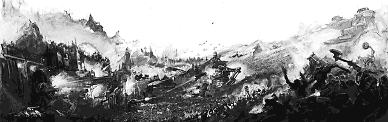

| ||
 | ||
|
As the battles raged on the planet, Ghazghkull unleashed another of his carefully prepared surprises. Incredibly, dozens of the great asteroid fortresses encountered by Admiral Parol's ships began to descend from orbit. Slowed by powerful force fields, rockets and modified traktor kannon, the Ork Roks made landings in the verdant equatorial jungles and across Armageddon Primus and Secundus. Many were lost to ground fire or accidents but each one that survived became a bastion for the Orks, a rallying point and a ready-made fortress. As well as their huge guns and missile batteries, the Roks contained giant teleport arrays like those first used by Ghazghkull in his Piscina campaign. These were employed to teleport down Ork reinforcements, including Gargants and heavy artillery, in an endless stream. Commissar Yarrick personally led attacks by Cadian shock troops supported by the Titans of Legio Metallica and Legio Ignatum which destroyed several of the fortresses, but bloody battles around many others consumed whole regiments in hours. For the rest of the war, the Space Marines bore the brunt of eliminating the Ork fortresses where they could, the Salamanders Chapter winning particular acclaim for their successes against fortresses along Hemlock River. Mysteriously, the Orks also made landings in the Fire Wastes and Dead Lands to the north and south of the main continent of Armageddon. Even Yarrick was surprised; these grim, forbidding lands had always been believed to be uninhabitable and utterly valueless. Their value to Ghazghkull became apparent when weeks later hundreds of tanker-sized Ork submersibles rose from the polluted waters and made landings at Tempestora and Helsreach. Surprise was total, Tempestora fell within days and the dockyards of Helsreach were soon captured. Only a bitter defence by the Helsreach Hive gang militias, with supporting companies of Stormtroopers and Space Marines which had been rushed to the area, prevented the Orks overrunning the entire hive. Fourteen days after the initial Ork landings, the first major confrontation between Ork and Imperial war engines occurred. A ten day battle raged over the Diabolus factory complex as the Gargant mobs of Warlord Burzuruk and Warlord Skarfang clashed with the Titans of Legio Crucius. Six Titans and eight Gargants were utterly destroyed in the fighting and many others needed months of repairs before they could fight again. The Diabolus complex was wrecked during the battle, its foundries and machine shops blasted apart or crushed underfoot by giant fighting machines. In the aftermath of the battle Ork Speed Kults swiftly encircled Infernus Hive, cutting it off from all outside help. Mechanised counter-attacks into the ash wastes met with initial success, but when an entire regiment of Savlar Chem Dogs was surrounded and wiped out by the Speed Freeks, further attempts to break out were abandoned by those inside.
|
. |
As the beleaguered defenders pondered how to lift the siege, reports came in of a vast Ork horde rounding the Pallidus Mountains from the north east. Soon the horde was visible from the hive spire, a great sea of warriors which seemed to fill the empty expanse of the ash wastes to overflowing. Towering Gargants strode through the tide, like great ships rolling on a green sea. The guttural war chants of the Orks could be heard from over twenty miles away, the ground shaking with their progress. Worst of all, the countless bannerpoles swaying over the horde bore the personal glyph of the mighty Ghazghkull himself. As the skies darkened beneath the shadow of Ork hulks high above and the first orbital bombardments crashed down, the citizens of Infernus knew that their doom was upon them. They made what preparations they could with preternatural calm, commending their souls to the Emperor as they built barricades or distributed weapons and ammunition to the troops. They tried to take inspiration from the legends of Commissar Yarrick and how he made the Orks pay for every inch of ground at Hades Hive. Not all were brave enough to face their doom, thousands fled into the wastes to be killed or captured by Speed Kults which circled the hive like vultures over a carcass. The Adeptus Arbites soon moved to secure the hive, turning back or executing any who failed in their duty to the Emperor. As Ghazghkull's horde came within range, the last great siege guns of Infernus pounded at them, lobbing thousand-pound shells into the mass of greenskins until return fire from the orbiting hulks smashed them apart. In the brief lull that followed, Ghazghkull delivered to the defenders of Infernus a messenger. It was Colonel Gortar of the Chem Dogs, horribly mutilated and missing his eyes and hands. The message the Colonel bore was a simple one which would be heard many times across Armageddon in the months to come: "Surrender or die!"
|